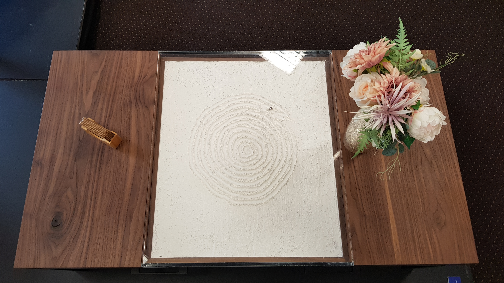
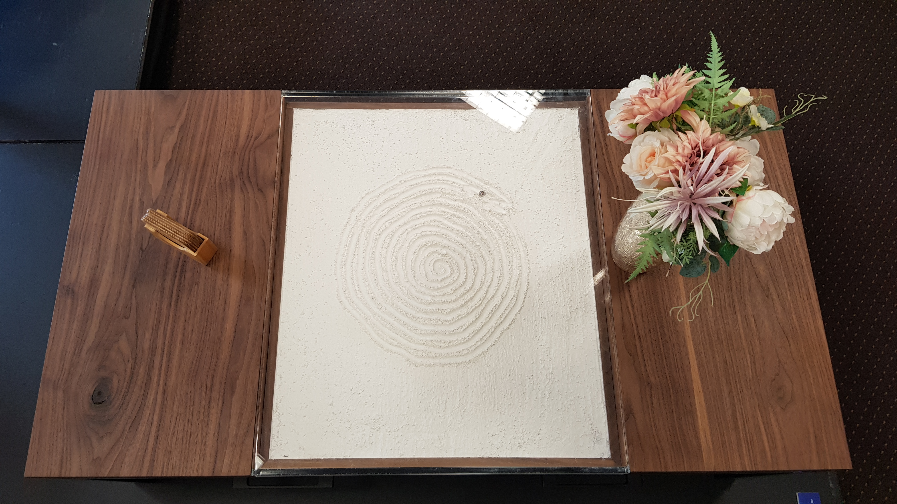
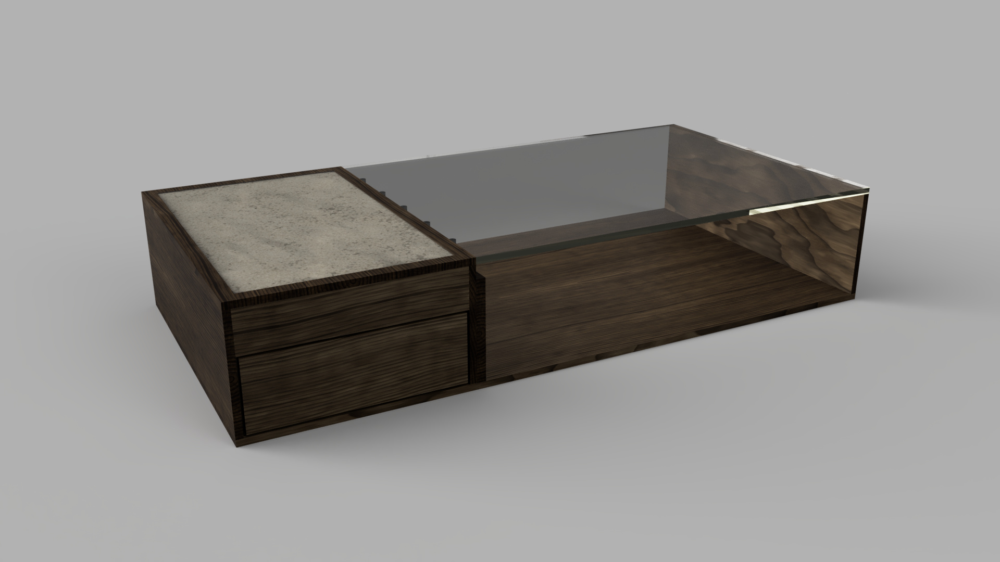
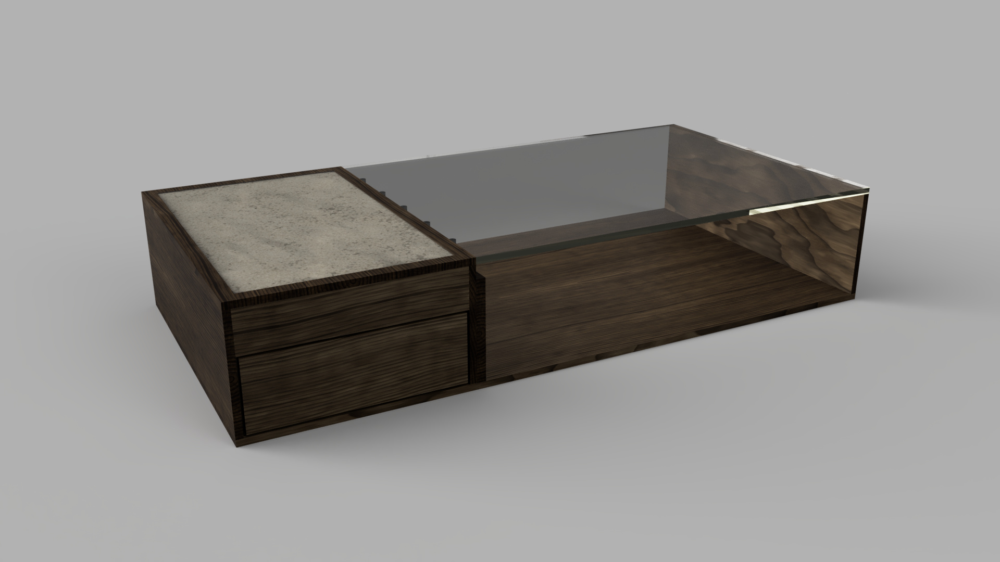

FAMILY LIVING ROOM
Designed for a busy family space where sport, movies and entertaining are part of daily life.
This coffee table was designed as a centrepiece for a family moving into a new home in Highton. They wanted a functional table that fits a modern, minimalist interior but also has a feature that immediately draws attention when you walk into the room.
The result is a kinetic sand coffee table: a low, rectangular table with storage drawers, a walnut top and a CNC-driven metal ball that traces patterns through sand beneath a clear acrylic cover. The table balances durability, ergonomics and everyday usability with a visually engaging interactive feature.
 

Early design exploration compared multiple layouts for the sand tray, storage, frame height and overall proportions. These iterations helped dial in the balance between visual impact and everyday usability. the following images show some of the designs:
 

The finished kinetic sand coffee table combines furniture design, CNC motion control and product development into a single piece of functional furniture. It works as a robust, easy-to-clean coffee table with storage, while the kinetic sand sculptor and lighting transform it into a living centrepiece when powered on.
Building the piece developed my skills across user research, CAD, working drawings, welding, advanced timber joinery, electronics integration and scheduling a complex production plan from raw stock through to installation in the client’s home.